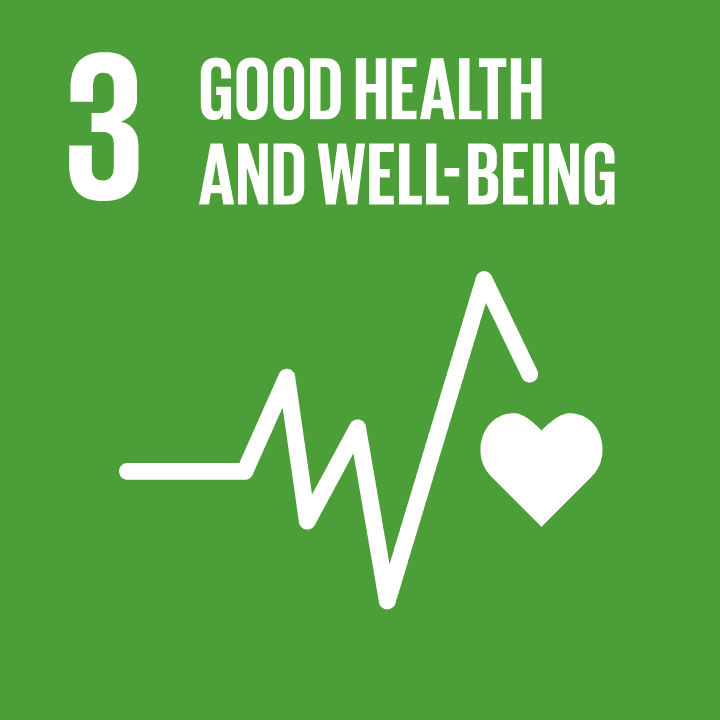
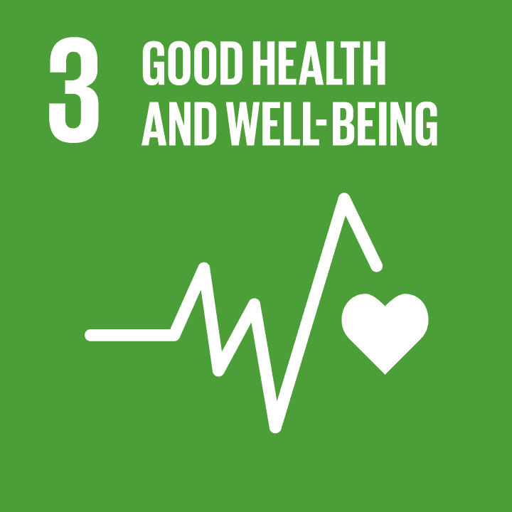

Penjelasan
Tujuan SDGs yang ke tiga merupakan Kesehatan yang Baik dan Kesejahteraan yang bertujuan untuk menjamin
kehidupan yang sehat dan meningkatkan kesejahteraan untuk semua usia. Tujuan ini mencakup berbagai aspek
yang berkaitan dengan kesehatan fisik, mental, serta promosi kehidupan yang sehat di seluruh dunia. SDGs
3 berfokus pada pengurangan angka kematian dan penyakit, penyediaan layanan kesehatan yang terjangkau
dan berkualitas, serta pencegahan dan pengobatan penyakit yang mengancam kehidupan seperti HIV/AIDS,
malaria, dan penyakit tidak menular.
Kesehatan yang Baik dan Kesejahteraan mencakup berbagai komponen penting, yaitu memastikan akses ke
layanan kesehatan yang adil dan berkualitas bagi setiap individu, tanpa memandang latar belakang ekonomi
atau sosial. Selain itu, pencegahan penyakit sangat penting untuk mengurangi risiko penyakit dengan
mendorong pola hidup sehat di masyarakat. Perawatan kesehatan mental juga mendapat perhatian besar,
mengingat kesejahteraan mental merupakan bagian integral dari kesehatan yang baik. Selain itu,
peningkatan kondisi hidup yang mencakup penyediaan air bersih, sanitasi yang layak, dan gizi yang cukup,
menjadi faktor penentu dalam menciptakan lingkungan yang mendukung kesehatan fisik dan mental secara
menyeluruh.
Indikator-indikator yang digunakan untuk mengukur kemajuan dalam pencapaian tujuan ini meliputi berbagai
aspek kesehatan dan kesejahteraan. Beberapa indikator utama adalah:
1. Angka kematian ibu: Menurunkan angka kematian ibu saat melahirkan, yang merupakan indikator
penting dalam menilai kualitas layanan kesehatan ibu dan anak.
2. Angka kematian anak: Menurunkan angka kematian pada anak-anak di bawah usia lima tahun,
dengan fokus pada pencegahan penyakit dan peningkatan gizi.
3. HIV, malaria, dan penyakit menular lainnya: Menurunkan prevalensi dan angka kematian yang
disebabkan oleh HIV/AIDS, malaria, dan penyakit menular lainnya. Ini termasuk akses yang lebih baik ke
layanan pencegahan, deteksi, dan pengobatan.
4. Penyakit tidak menular: Mengurangi angka kematian akibat penyakit tidak menular (seperti
penyakit jantung, diabetes, kanker) dengan mendorong gaya hidup sehat dan akses ke pengobatan yang
tepat.
5. Akses ke layanan kesehatan seksual dan reproduksi: Meningkatkan akses terhadap layanan
kesehatan seksual dan reproduksi, termasuk keluarga berencana dan informasi terkait kesehatan
reproduksi.
6. Kesehatan Mental: Meningkatkan dukungan terhadap kesehatan mental, termasuk pencegahan dan
pengobatan gangguan mental, serta pengurangan stigma terkait masalah kesehatan mental.
7. Asuransi kesehatan universal: Meningkatkan akses terhadap sistem kesehatan yang mencakup
seluruh lapisan masyarakat tanpa memandang kemampuan finansial (universal health coverage).
8. Gizi dan pola makan yang sehat: Meningkatkan status gizi di masyarakat dengan mengurangi angka
kelaparan dan malnutrisi, serta mempromosikan pola makan yang sehat.
9. Pengurangan kecelakaan lalu lintas: Mengurangi kecelakaan lalu lintas dan cedera yang
berhubungan dengan keselamatan di jalan raya, baik itu dengan kebijakan yang lebih baik maupun edukasi
masyarakat.
10. Pengurangan penggunaan tembakau dan alkohol: Mengurangi konsumsi tembakau, alkohol, dan
obat-obatan terlarang, yang berkontribusi pada berbagai masalah kesehatan dan penyakit.